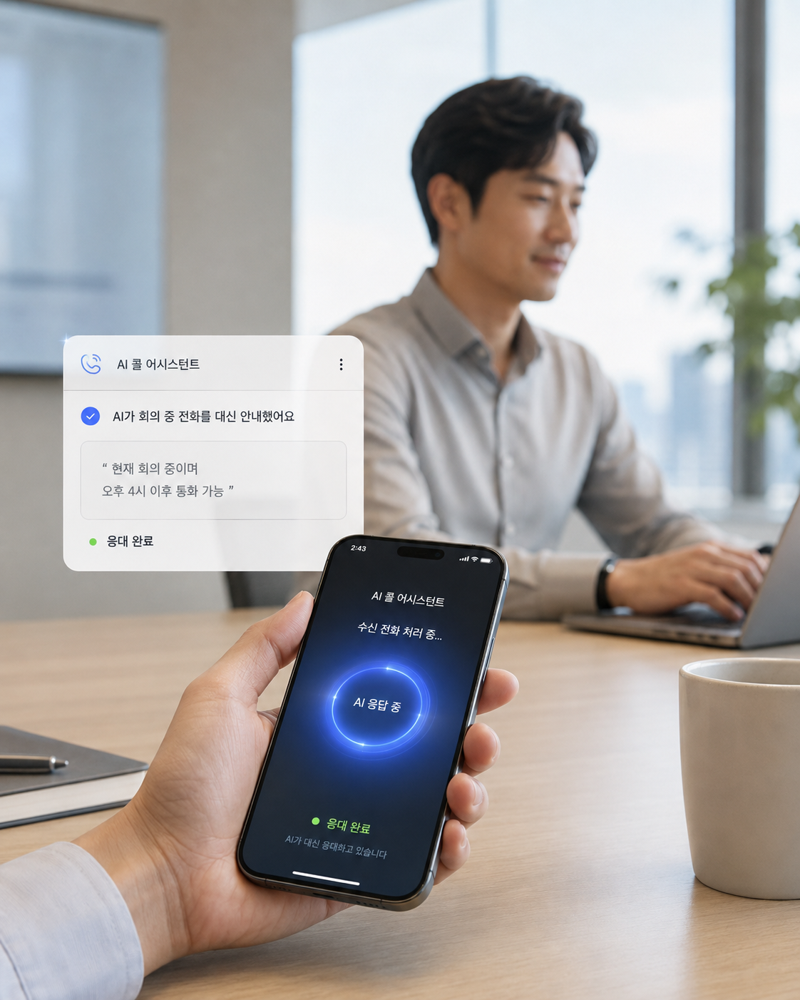
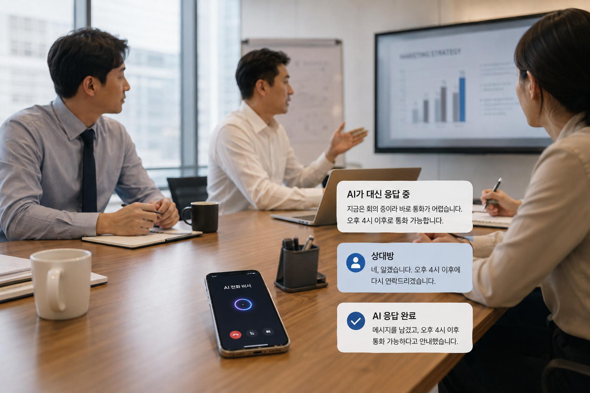
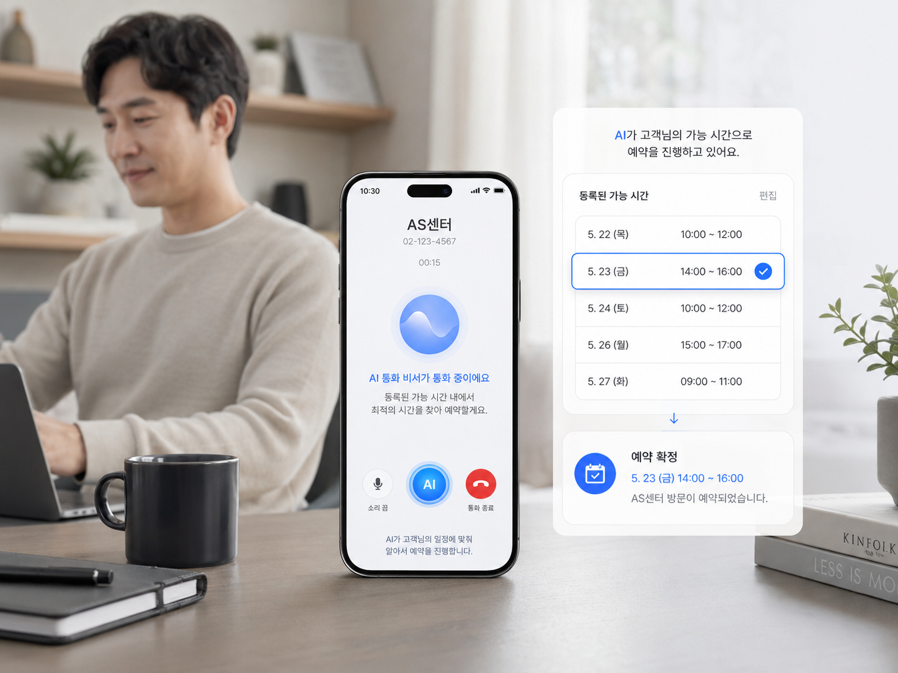
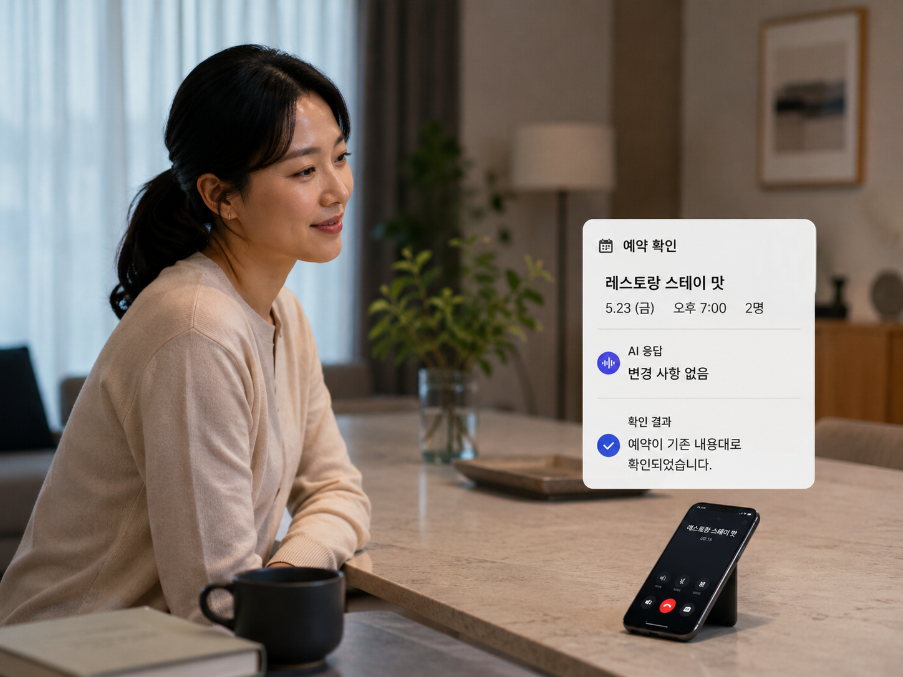

문제 01업무 흐름 중단
매번 현재 상황과 가능한 시간을 직접 설명해야 해요.
회의·업무 중 걸려온 전화에 직접 응대하지 못하면, 지금 상황을 설명하고 다시 가능한 시간을 안내하는 과정이 반복됩니다.
회의·업무·이동 등으로 지금 전화를 받기 어려울 때, AI가 내 캘린더 일정과 미리 등록한 요청을 바탕으로 현재 상황을 안내하고 필요한 전화 업무를 대신 처리해드려요.

현재 회의 중이며 오후 4시 이후 통화 가능하다고 안내하고, 필요한 내용은 요약해 전달합니다.
전화를 못 받는 순간마다 직접 설명하고 다시 연락하는 일이 반복되면, 중요한 업무 흐름이 끊기고 단순한 전화 처리에도 시간을 계속 쓰게 됩니다.
회의·업무 중 걸려온 전화에 직접 응대하지 못하면, 지금 상황을 설명하고 다시 가능한 시간을 안내하는 과정이 반복됩니다.
단순한 확인이나 의사 전달만 필요한 전화라도 직접 받아야 해서, 원래 하던 일의 흐름이 자주 끊기고 불편이 쌓입니다.
대신받기 조건을 정하고, 캘린더와 미리 등록한 요청을 연결해두면 AI가 조건에 맞는 전화를 대신 처리하고 결과를 전달해드립니다.
시간대·상황 등 AI가 전화를 대신받을 조건을 설정합니다.
캘린더를 연동하거나 예상되는 전화에 대한 응답 내용을 사전에 등록합니다.
조건에 맞는 전화가 오면 AI가 일정과 등록 정보를 바탕으로 자유롭게 응대합니다.
통화 후 처리한 내용과 추가 확인이 필요한 사항을 요약해 전달합니다.
몇 가지 질문으로 AI 전화비서에 대한 이용 니즈를 확인하고 있습니다. 당신의 답변이 서비스 방향을 정하는 데 도움이 됩니다.
AI전화비서에 대한 의견을 남겨주셔서 감사합니다. 보내주신 답변은 서비스 수요와 우선순위를 검토하는 데 활용됩니다.
AI 전화비서는 단순히 전화를 대신 받는 데 그치지 않고, 일정 안내·예약 확인·의사 전달처럼 반복되는 전화 업무를 대신 처리하는 데 초점을 둡니다.

회의 중 전화가 오면 AI가 현재 회의 중임을 안내하고, 예를 들어 오후 4시 이후 통화 가능하다는 식으로 캘린더 일정 기반의 답변을 전달합니다.

AS센터에서 예약 일정 조율 전화를 걸어오면, 사용자가 사전에 등록해둔 가능한 날짜와 시간을 바탕으로 예약을 진행합니다.

레스토랑 등에서 예약 확인 전화를 할 때, 사용자가 미리 등록한 “변경 사항 없음” 같은 의사를 AI가 대신 전달할 수 있습니다.
AI 전화비서는 모든 전화를 임의로 처리하지 않습니다. 사용자가 허용한 정보만 활용하고, 정해둔 범위 안에서만 응대하며, 중요한 결정은 반드시 사용자에게 넘깁니다.
연동한 캘린더와 사전 등록 정보 등 사용자가 허용한 범위 내의 정보만 활용해 응대합니다.
일정 안내·예약 확인 등 사용자가 지정한 범위까지만 자동으로 처리하도록 설정할 수 있습니다.
결제·계약·중요 일정 변경 등 사전 승인 범위를 벗어난 요청은 임의 처리하지 않고 사용자에게 전달합니다.
전화 응대가 어려운 순간에 AI가 대신 설명하고 처리해주는 기능이 유용한지 설문으로 확인하고 있습니다. 잠깐의 응답이 서비스 방향을 정하는 데 큰 도움이 됩니다.
설문 참여하기